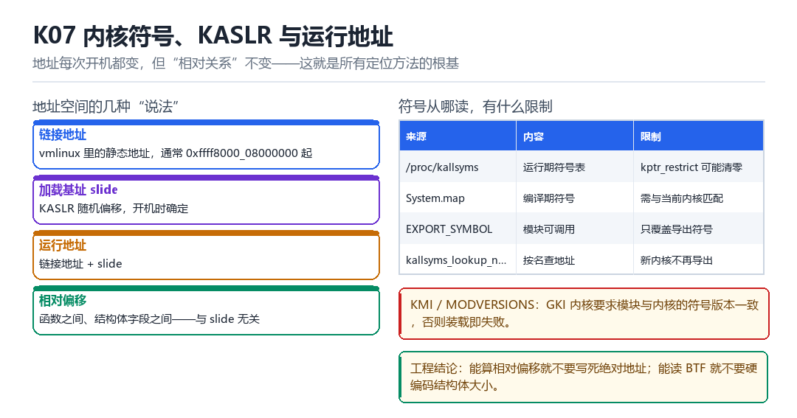

内核符号、KASLR 与运行地址
System.map、kallsyms、export、KMI、MODVERSIONS
地址每次开机都变，但“相对关系”不变——这是所有定位方法的根基。

7.1 四种“地址说法”
| 说法 | 含义 | 是否随开机变 |
|---|---|---|
| 链接地址 | vmlinux 里的静态地址 | 不变 |
| slide | KASLR 随机偏移 | 每次开机变 |
| 运行地址 | 链接地址 + slide | 变 |
| 相对偏移 | 函数间、字段间的距离 | 不变 |
7.2 符号从哪读
/proc/kallsyms # 运行期符号表（可能被 kptr_restrict 清零）
System.map # 编译期符号，需版本匹配
EXPORT_SYMBOL # 只有导出符号对模块可见
kallsyms_lookup_name # 新内核不再导出，需要自己找7.3 KMI 与 MODVERSIONS：GKI 的两道门槛
先分清两个东西，它们经常被混为一谈：
| 概念 | 是什么 | 在哪一关生效 |
|---|---|---|
| KMI | 允许 vendor 模块引用的符号白名单，加上每个符号的 ABI 签名 | 构建期 / 检查期：引用了白名单外的符号，就不算合规模块 |
| MODVERSIONS | 在模块里记录每个引用符号的 CRC | 装载期：CRC 不匹配，init_module 直接失败 |
所以“符号找不到”与“符号版本不匹配”是两类完全不同的失败：前者是名字不在（或没导出），后者是名字在、但 ABI 变了。排查时先看 dmesg 报的是哪一种。
GKI（通用内核镜像）的意义就在于此：把“内核与 vendor 模块之间的接口”冻结成 KMI，这样同一份 vendor 模块能在多个内核版本上跑。而 KPM 类方案倾向于自己实现 loader，绕开这两道关——代价是所有正确性检查都要自己做。
7.4 本章自测
- 链接地址与运行地址的关系是什么？
- 为什么“相对偏移”不受 KASLR 影响？
- GKI 的 MODVERSIONS 检查拦住了什么？
- 拿到一个陌生内核，你第一步会做什么探测？
7.5 深入：KASLR 的随机化粒度
KASLR 不是每一条指令都随机，而是把整个内核镜像在虚拟地址空间里挪一个偏移。所以“函数之间的相对距离”是固定的——这就是为什么相对偏移是稳定的定位基础。
| 对象 | 随机化 | 影响 |
|---|---|---|
| 内核镜像基址 | 有（slide） | 绝对地址变 |
| 模块加载区 | 有 | 模块地址变 |
| 直接映射区 | 有 | 物理内存视图变 |
| 函数相对距离 | 无 | 偏移稳定 |
7.6 实战：从 kallsyms 反推 slide
# 1. 已知符号 + 已知编译期地址：
slide = kallsyms_addr('_text') - VMLINUX_TEXT_ADDR
# 2. 用 /proc/kallsyms 里两个符号的差，与 System.map 比对
# 3. 读异常向量基址 VBAR_EL1（ARM64 没有 x86 的 IDT）7.7 原理推演：为什么“地址随机化”不能防住所有攻击
KASLR 让“绝对地址”不可预测，但它不改变“相对布局”。所以只要攻击者能泄露一个内核地址，就能算出 slide，进而算出所有符号的地址。这就是“信息泄露”在利用链里的价值。
| 泄露源 | 能算出 | 常见程度 |
|---|---|---|
| /proc/kallsyms | 全部符号 | 受限 |
| dmesg 里的地址 | 部分 | 较常见 |
| 一个函数的返回值 | slide | 视漏洞 |
| 侧信道 | slide | 难 |
防御方因此会“抹掉”日志里的地址（kptr_restrict、%pK），而攻击方会想尽办法找一个泄露点。
7.8 数据细节：kallsyms 的三种权限状态
| kptr_restrict | 非特权用户看到 | 特权用户看到 |
|---|---|---|
| 0 | 真实地址 | 真实地址 |
| 1 | 0（除非 CAP_SYSLOG） | 真实地址 |
| 2 | 0 | 0 |
所以在 kptr_restrict=2 的设备上，/proc/kallsyms 只能用来“看符号名”，不能用来“拿地址”。这时只能靠 System.map、BTF、或特征扫描。
7.9 深入：符号的三种绑定属性
| 绑定 | 含义 | 对模块的意义 |
|---|---|---|
| STB_LOCAL | 文件内可见 | 模块用不到 |
| STB_GLOBAL | 全局可见 | 可被导出 |
| STB_WEAK | 弱符号 | 可被覆盖 |
EXPORT_SYMBOL 导出的就是“全局符号”。而 EXPORT_SYMBOL_GPL 多了一个“只给 GPL 模块用”的限制——这在写模块时要特别注意。
7.10 深入：为什么“符号版本”会变
因为内核结构体会变。比如 task_struct 加了一个字段，那么“访问 cred 的偏移”就变了。MODVERSIONS 通过“对符号的 CRC 校验”来发现这种不匹配。
modinfo your_module.ko | grep vermagic
# vermagic 里包含内核版本与 SMP/PREEMPT 等配置7.11 实战：一次“符号找不到”的排查
- 确认符号名拼写（大小写、下划线）。
- 确认是否被导出（
grep EXPORT_SYMBOL源码）。 - 确认内核版本（新版可能删掉了）。
- 退路：用特征扫描找地址，或改用一个稳定导出的等价符号。
两次开机，同一个符号给了两个地址
同一台设备，连着开两次机，两次都去 grep commit_creds /proc/kallsyms。第一次是 ffffffc0082a1b40，第二次变成 ffffffc009f31b40。地址每次都在跳，可你心里一点都不慌——因为你知道这两个数各自减去 System.map 里 _text 的值，得到的差完全一样。KASLR 挪的是整块地基，不是楼里的房间。
把内核镜像想成一栋被整体平移的楼：链接器给每个房间标了门牌（链接地址），开机时 bootloader 在 dtb 的 /chosen 里塞一个 kaslr-seed，早期启动代码据此算出 slide，把整栋楼连同门牌一起挪走。房间与房间之间的距离，一步没变。所有定位方法，最后都站在这句话上。
一次开机里 slide 是怎么落地的
- bootloader 对 dtb 的 `/chosen` 写
kaslr-seed（或由 EFI 随机源提供） → 结果：内核还没解压缩就拿到一份随机数。 - `kaslr_early_init` 对 随机数 取模并按段对齐：算出
slide，限定在CONFIG_RANDOMIZE_BASE允许的范围内 → 结果：得到一个每次开机都不同的整块偏移。 - 早期重定位 对 所有绝对地址引用 加 slide：重定位表里的每一项被改写 → 结果：内核代码、只读数据、
kallsyms表整体搬到运行地址。 - `kallsyms` 对 压缩过的符号名表 展开：
kallsyms_expand_symbol用索引表与高频字符表还原名字，地址按相对基址加偏移还原 → 结果：/proc/kallsyms里直接列出当前运行地址。 - `kptr_restrict` 对 输出 做遮挡：值 1 时非特权进程看到全 0，值 2 时连特权进程的
%p也被 hash → 结果：地址被抹掉，但表里各符号的先后顺序与相对距离一点没动。
第 5 拍是整章的题眼：遮地址遮的是绝对值，遮不住关系。只要你能从任意一个渠道拿到一个符号的真实运行地址（一次未受保护的 %px、一个可读的 tracepoint、一段能读的内核内存），把它的运行地址减去 System.map 里的链接地址，slide 就到手；随后整张 kallsyms 表都能按链接地址加 slide 推出来。这也是为什么内核里 printk 用 %p 会打印成哈希值，而 %px 被反复强调只用于调试。
定位一个 hook 点的五步减法
- 探测层 对 `/proc/kallsyms` 取值：先看
_text、_stext是否非零，判断地址有没有被遮 → 结果：决定走直接读，还是先想办法拿 slide。 - 算 slide 对 System.map 做减法：用运行地址减链接地址，再拿第二个符号校验差值是否一致 → 结果：两次一致说明版本匹配；不一致说明拿错了 System.map。
- 定位 hook 点 对 目标函数名 查表：查
/proc/kallsyms，或按 K06 的特征扫描在 Image 里找指令模式 → 结果：拿到可 patch 的运行地址。 - 校验 ABI 对 KMI 与 MODVERSIONS 过一遍：
modinfo看vermagic，dmesg看报的是Unknown symbol还是disagrees about version of symbol→ 结果：区分名字不在与名字在但 ABI 变了这两类完全不同的失败。 - 回退层 对 陌生内核 降级：改用稳定的相对偏移，或换一个已导出的等价符号 → 结果：工具不崩，日志里写清究竟走了哪条路。
| 地址说法 | 从哪来 | 随开机变吗 | 典型用途 |
|---|---|---|---|
| 链接地址 | vmlinux 与 System.map 里的静态值 | 不变 | 算 slide 的基准 |
| slide | kaslr-seed 加早期重定位 | 每次开机变 | 把整张符号表搬到位 |
| 运行地址 | 链接地址加 slide | 变 | 实际 patch 与下断点的地址 |
| 相对偏移 | 任意两个符号或字段之间的距离 | 不变 | 跨版本定位、CO-RE 重定位 |
| %p 输出 | printk 里的哈希指针 | 看不出原值 | 日志里被遮挡的地址 |
| %px 输出 | printk 里的真实指针 | 变 | 调试用，也是常见泄露点 |
自己把 KASLR 的 slide 算出来
# 1. 看当前符号表有没有被遮
head -3 /proc/kallsyms && cat /proc/sys/kernel/kptr_restrict
# 成功：地址列非全 0 => 可以直接读；失败：全 0 => 先处理 kptr_restrict 再读
# 2. 取运行地址（链接地址去 System.map 里取）
grep -E ' (_text|_stext|commit_creds|init_task)$' /proc/kallsyms
grep -E ' (_text|_stext|commit_creds|init_task)$' /data/local/tmp/System.map
# 成功：两份表里同名符号都出现且顺序一致 => 版本匹配
# 失败：System.map 里缺符号 => 拿错文件了，换同版本那份
# 3. 算 slide，并用第二个符号交叉校验
# slide = runtime(_text) - link(_text)；再验证 commit_creds 的差值是否相等
# 成功：两个差值完全一致 => 整张表都能按 链接地址 + slide 还原
# 失败：差值不同 => 还有别的重定位，或符号被裁剪，改走 K06 的特征扫描
# 4. 确认随机化确实开着
zcat /proc/config.gz | grep -E 'CONFIG_RANDOMIZE_BASE|CONFIG_KALLSYMS_ALL'
# 成功：CONFIG_RANDOMIZE_BASE=y；失败：为 n 或读不到 config.gz => 地址本就不随机
# 5. 重启一次，再取一遍 _text
grep ' _text$' /proc/kallsyms
# 成功：两次地址不同、但任意两符号之差不变 => 这就是本章的全部结论第 3 步那句减法不要只做一次。用两个符号分别算、确认差值相等，才能排除你拿到的是别的版本 System.map、或者某些符号被单独裁剪过的情况。第 4 步也有实际意义：不少工程机与模拟器根本没开 CONFIG_RANDOMIZE_BASE，这时候地址两次开机一样，用 KASLR 去解释现象只会把自己带偏。
把这条结论带走：地址会变，相对关系不变；符号找不到和符号版本不匹配是两种病。第四部 M01 装载 KPM 模块时的第一层能力探测、M03 定位 ARM64 指令 Hook 点前的地址换算，用的都是这里算 slide 的减法；第三部 F11 的隐藏与兼容总表要求每个地址都写成基址加偏移，也是同一个道理。上一讲 K06 的 BTF 给的是类型图里的相对偏移，这一讲给的是运行时的绝对落点——两者合起来，才是一颗陌生内核的完整地图。